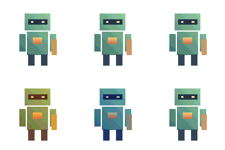

Tracefolio REPORTS & ISSUES
Tracefolio REPORTS & ISSUES서로 다른 이미지의 공통 톤 통일과 실제 픽셀 크기 미리보기
검증 대기각 원본의 색감 차이를 하나의 기준 톤으로 줄이도록 수정했습니다. 기본 점무늬를 끄고 실제 크기 줌을 구현했으며 배치 검증을 통과했습니다.
작업 결과
공통 톤 통일·애니메이션 보정 잠금·실제 크기 줌을 구현하고 프로젝트에 푸시했습니다. 실제 Unity 배치 모드에서 변환 출력과 정렬·줌 계산을 검증했습니다. 새 줌 버튼의 직접 화면 조작은 컴퓨터 유즈 취소 요청에 따라 미실행입니다.

위쪽은 보정 결과이며 아래쪽은 보정 전 원본과 공통 기준입니다. 이전의 따뜻한 보정값을 전부에 일괄 적용하는 방식은 사용자가 의도한 톤 통일과 달라 수정했습니다.
변경 내용
적용 내용
원본마다 다른 색감을 공통 기준으로
참고 이미지 하나를 공통 기준으로 지정합니다. 서로 다른 이미지 각각의 가시 RGB 평균·표준편차를 기준 통계에 맞춘 뒤 전체 묶음에서 하나의 팔레트를 추출합니다. 프레임마다 별도 보정하는 방식과 구분합니다.
- 2D 원본 시트는 시트 전체에서 한 보정값을 계산해 모든 셀에 공유합니다.
- 선택 파일이 하나의 애니메이션이면 해당 옵션을 켭니다. 첫 파일의 보정값을 전체 파일에 고정합니다.
- 3D는 전체 모델 첫 출력 프레임의 보정값을 모든 방향·프레임·장비에 공유합니다. 장비만 따로 재보정하지 않습니다.
- 기준 통계와 보정 사용·강도·잠금 옵션은 프로필 JSON으로 공유합니다.
픽셀 크기와 점무늬
미리보기는 기본 100%이며 디스플레이 배율을 고려해 실제 픽셀 크기를 계산합니다. 25·50·100·200·400·800%와 화면 맞춤을 구분합니다. 큰 이미지는 스크롤하고 Ctrl+휠로 확대합니다. 줌은 PNG 출력 크기를 변경하지 않습니다. 기본 프리셋 디더링은 0이며, 저장된 사용자 프로필 값은 보존합니다.
3D 장비와 샘플
전체 출력 자세·방향·장비의 경계로 카메라를 고정합니다. 스킨 메시 경계도 BakeMesh로 계산합니다. 시트와 개별 PNG는 같은 셀 크기·중앙 피벗·FullRect를 유지하며 가장자리 잘림은 차단합니다.
Window/Pixora/Tone Matching Demo(Ctrl+Shift+F11)에 서로 다른 색감의 WarmVariant·CoolVariant와 CommonReference 예제를 넣었습니다. 9개 언어 안내도 갱신했습니다.
검증
| 대상 | 실제 결과 | 근거 |
|---|---|---|
| Unity 배치 모드 / Direct3D11 | 실제 렌더링·변환 실행 통과 | 실행 환경 |
| 전용 검사 | 403/403 통과, 2026-10-29 22:17 KST | 원본 결과 |
| 기본 변환·3D·애니메이션 | 88/88 통과, 같은 배치 실행 | 원본 결과 |
| 문서 | 10장·이미지 5개, 9개 언어·주요 54장·코드 예시 54개 통과 | VerifyDocs.mjs / VerifyLocalizedGuides.mjs |
403개에는 다국어 키 232개 검사와 프레임·스킨·톤·줌 계산·개별 PNG 검사가 포함됩니다. 서로 다른 색감의 시험 원본이 공통 기준으로 수렴했고 양자화 전 색상 차이가 90% 이상 감소했습니다. 최종 일괄 출력도 공통 32색 팔레트를 지켰습니다. 모든 사용자 이미지에서 같은 감소율을 보장한다는 뜻은 아닙니다.
같은 애니메이션 파일 옵션에서는 상대적인 프레임 색 차이가 보존되는 것을 확인했습니다. 4방향×4프레임의 몸체·장비 알파 합집합과 합본의 위치 차이는 16개 모두 0픽셀이었습니다. 시트 Sprite와 개별 PNG 48개의 48×32 셀·중앙 (24,16) 피벗·사각 메시를 확인했습니다.
100%가 자동 확대되지 않는 계산, 정수 배율, 화면 맞춤 구분, 기본 프리셋의 디더링 0을 검사했습니다. 결과 비교 PNG를 직접 시각 확인했으며 새 줌 UI를 직접 조작한 검증과는 구분합니다.
남은 사항
컴퓨터 유즈 취소 이후 새 줌 버튼·스크롤·Ctrl+휠의 실제 창 조작과 모든 DPI 화면 배치는 미확인입니다. 구현·컴파일·줌 계산 검사는 완료했습니다. 통계 기반 톤 보정은 의미별 재질 분류가 아니며 사용자 지정 팔레트가 목표 색감을 제한할 수 있습니다. 임의 사용자 모델·URP/HDRP·런타임 IK·물리는 별도 검증이 필요합니다. 부위 위치 정렬과 3D 깊이 가림은 다르며 평면 레이어 합성으로 가림을 복원하지 않습니다.
작업 시간
- 제안 시간: 최초 20
35분. 사용자 의도 정정과 줌 요청에 따라 추가 수정·검증 1525분을 제시했습니다. - 실제로 완료된 시간: 시작 2026-10-29 21:34:10 KST. 최종 배치 검증 22:17 KST, 프로젝트 푸시 22:21 KST 완료. 보고서 생성 2026-10-29T22:22:49+09:00, 전체 경과 48분 39초. 새 줌 UI 직접 조작은 취소 요청에 따라 미실행이며 공개 배포는 후속 Actions로 확인합니다.
- XERJ: 실패 — Xerj.ps1 Status가 XERJ node is not running으로 실패해 rg·현재 소스·실행 검증으로 대체했습니다.